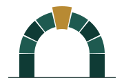

The company that stands without you
Keybridge Exit Partners prepares Hungarian mid-sized, owner-managed companies for exit. Over three or five years we build a business that runs without its founder, scales, and keeps its value. At the end the owner decides: sell, hand over to a prepared management team, or pass it on within the family.
We are the scaffolding, not the arch
While an arch is being built, scaffolding holds it. Once the keystone is set, the scaffolding comes down and the arch stands on its own. That is what we do with a company: for three or five years we are the scaffolding, and the goal is not to be needed.
The approach draws on Anglo-Saxon exit planning practice: value acceleration in gated stages, the value drivers a buyer prices, and the logic of the trust, adapted to Hungarian law, tax and company size.


Five years, five gates
If a milestone is not met, the next stage does not start. The owner pays for verifiable results, not promises.
The founder steps back
The owner can leave for two weeks and the company keeps running.
Clean numbers
Audited accounts, normalised earnings, an orderly ownership structure.
A self-running, scalable company
Management runs daily operations; growth no longer depends on the owner's time.
The decision
A signed owner's decision on one of the three routes, based on real numbers.
The transition
A closed transaction, or management's first full year on plan.
Exit is not the same as a sale
Sale
To a strategic or financial buyer, from a strong negotiating position, with several offers on the table.
Management handover
The owner keeps the shares and the dividend, sits on the owners' council and leaves daily operations.
Family succession
A prepared successor and family arrangements set down in writing, where needed within a fiduciary asset management structure.
annual revenue of a typical client, owned by Hungarian private individuals
verified sources behind the programme
real-world cases analysed
Partners: Anita Benkóné Paulovics, Mariann Berényi, Andrea Duhonyi and Levente Kohári, CFA. This page is general information and does not constitute legal, tax or investment advice. Most of this website is in Hungarian.